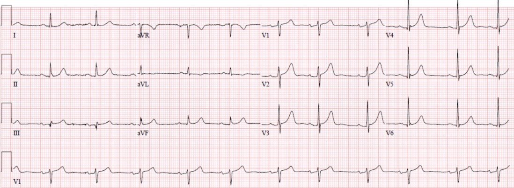
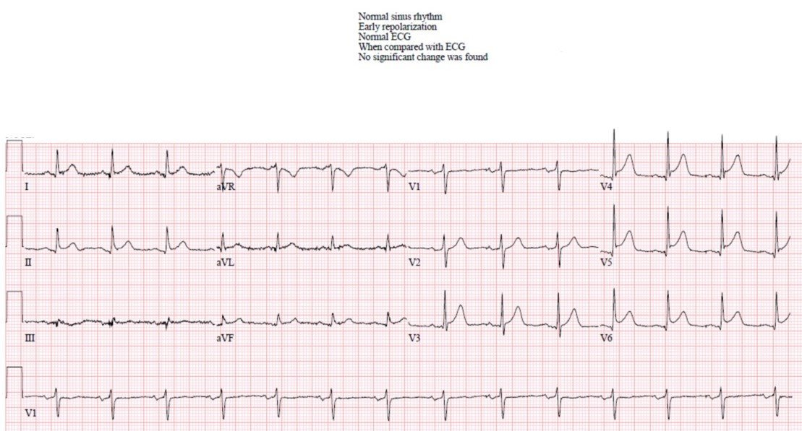
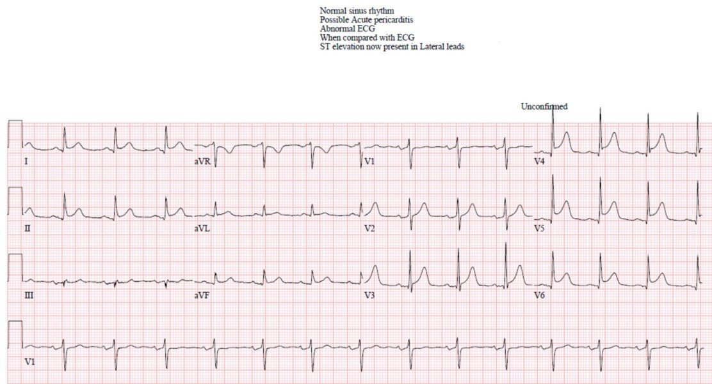
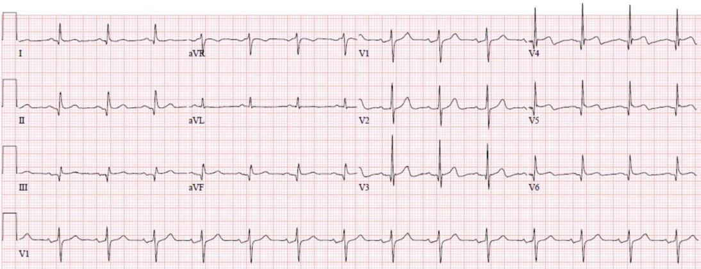
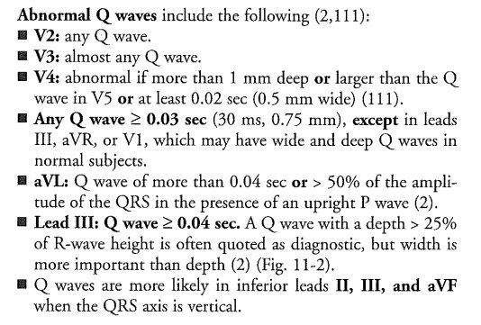
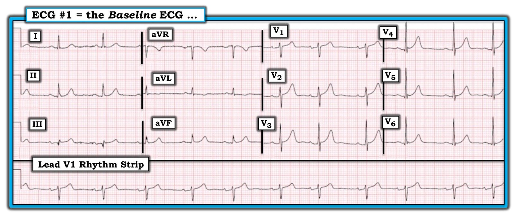
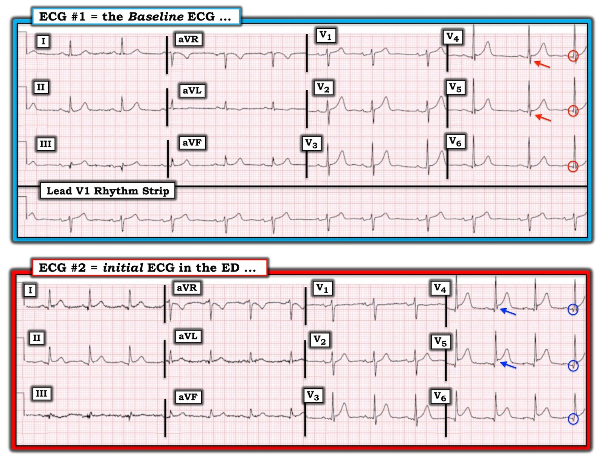
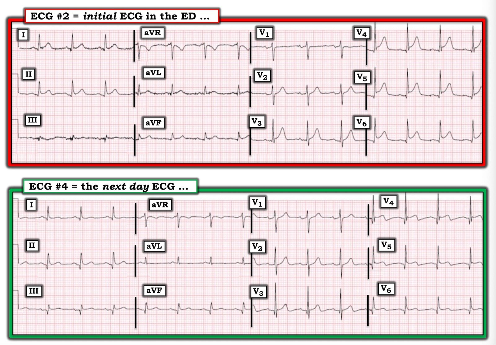

08/08/2020 — Một phụ nữ trung niên bị “ợ nóng” và “điện tâm đồ bình thường” theo máy tính
Bản dịch tiếng Việt của bài "A middle aged female with “heartburn” and a “normal ECG” per the computer" – Dr. Smith’s ECG Blog. Giữ nguyên toàn bộ 10 hình ảnh của bản gốc.
Đây là bài đăng lại một Tweet của Robert Jones (@RJonesSonoEM), được sao lại với sự cho phép, do Pendell Meyers viết
Một phụ nữ trung niên có tiền sử hút thuốc lá đến khoa cấp cứu (ED) vì “ợ nóng dữ dội.”
Đây là điện tâm đồ nền trước đây của bệnh nhân (thứ nhất) và điện tâm đồ tại khoa cấp cứu (thứ hai):
Điện tâm đồ nền:


Điện tâm đồ tại khoa cấp cứu:


Ca này được đăng trên Twitter và Dr. Smith (cùng một số người khác) trả lời rằng điện tâm đồ cho thấy nhồi máu cơ tim do tắc (OMI). Dr. Smith nói “Không” (nghĩa là “Không, tôi không đồng ý với máy tính”). “ST chênh lên mới ở V4-V6. Biến dạng mới của sóng S ở V4 – OMI – nhiều khả năng LAD đoạn xa.”
Điện tâm đồ cho thấy nhịp xoang với QRS và tăng tiến sóng R bình thường. Có ST chênh lên (STE) từ V3-V6 (hơn 1 mm ở V4-V6), và một gợi ý rất nhỏ ở I và II. Không có STE hay ST chênh xuống (STD) ở III và aVF. Chuyển đạo aVR có chút STD (soi gương, như thay đổi ở chuyển đạo aVR luôn là vậy). Cũng có các sóng Q mới rất nhỏ ở V4-6. Nhân tiện, điện tâm đồ này rõ ràng đạt tiêu chuẩn STEMI, bất kể tuổi hay giới. Sóng T ở V4-6 rõ ràng có diện tích lớn hơn so với trước, và do đó là sóng T tối cấp cho đến khi chứng minh được điều ngược lại.
Các chuyển đạo V4-V6 cho thấy mất sóng S mới. Khi thấy điều này ở chuyển đạo V2 và V3, chúng tôi gọi là “biến dạng phần cuối QRS” (terminal QRS distortion; bất kỳ mức STE nào kèm CẢ HAI: không có sóng S VÀ không có sóng J), nhưng nhiều khả năng nó có ý nghĩa ở bất kỳ chuyển đạo nào và cần nghiên cứu thêm. Chúng tôi sẽ sớm nghiên cứu điều này với cơ sở dữ liệu của mình.
LƯU Ý:
–Có STE ở chuyển đạo II lớn hơn chuyển đạo III. Chẳng phải bạn đã được dạy rằng điều này nghiêng về viêm màng ngoài tim sao?
–Cũng có hình dạng đoạn ST lõm (“mặt cười”) ở khắp các chuyển đạo. Chẳng phải bạn đã được dạy rằng hình dạng lõm nghiêng về viêm màng ngoài tim sao?
–Cũng có sóng T dẹt mới ở V1 so với trước. Chẳng phải bạn đã được dạy rằng “sóng T cao mới ở V1” là đáng lo ngại về thiếu máu cục bộ, và vì vậy đây là điều ngược lại sao?
Những quy tắc kinh nghiệm (rule of thumb) như thế này sẽ không bao giờ đủ để thay thế kinh nghiệm của chuyên gia, và không được dạy kèm đủ bối cảnh hay chuyên môn để giải thích khi nào và tại sao chúng thất bại. Hình dạng mặt cười, sóng T dương mới ở V1, STE ở V1 và V2 – tất cả những điều này có thể có chút hữu ích nếu bạn không có thời gian để thực sự học đọc điện tâm đồ, nhưng kém hơn so với cách đọc của chuyên gia.
Như mọi khi, bệnh cơ tim do stress Takotsubo và viêm cơ tim khu trú là những khả năng hiếm gặp, chỉ có thể chứng minh sau khi thông tim âm tính.
Điện tâm đồ được ghi lại vài phút sau:


Điện tâm đồ này phần lớn giống điện tâm đồ ban đầu, ngoại trừ việc STE ở I giờ lớn hơn một chút, và hình dạng đoạn ST ở III tạo ra vẻ tinh tế như hơi chênh xuống so với trước (dù không rõ ràng nằm dưới đường nền). Các sóng Q lớn hơn một chút.
Troponin I ban đầu thấp dưới ngưỡng phát hiện.
Bệnh nhân vẫn tiếp tục “ợ nóng.”
Bệnh nhân được đưa ngay đến phòng thông tim (cath lab), tại đó phát hiện và xử trí một huyết khối cấp ở LAD đoạn giữa/xa (không rõ điểm dòng chảy TIMI).
Troponin I đỉnh là 37 ng/mL. Đây là mức troponin cao (phần lớn STEMI có troponin I trên 10 ng/mL).
Đây là điện tâm đồ ngày thứ 2:


Các sóng Q sâu hơn ở V3-V6 và I. II và aVF có vẻ có sóng Q mới. Vẫn còn chút STE ở V3-V6, với phần cuối sóng T đảo ngược nhẹ ở V3-V6, nhiều khả năng cho thấy có tái tưới máu một phần mô còn sống.
Trích từ sách của Smith:


Những điểm cần học:
1. Bạn không thể tin tưởng máy tính trong việc nhận diện OMI, ngay cả khi máy đọc là hoàn toàn “bình thường.”
2. Bạn không thể tin tưởng các quy tắc kinh nghiệm như STE ở II lớn hơn III, vì chúng có thể thuyết phục sai khiến bạn rời xa chẩn đoán OMI.
3. Cách đọc điện tâm đồ của chuyên gia thường có thể phân biệt ST chênh lên biến thể bình thường với OMI và với viêm màng ngoài tim. ST chênh lên biến thể bình thường không nên có biến dạng phần cuối QRS (đặc biệt là biến dạng QRS MỚI) hay sóng Q bệnh lý.
4. Sóng Q thực sự bệnh lý có thể rất nhỏ trong giai đoạn cấp, chính là lúc bạn cần nhận ra chúng nhất. Những mô tả kinh điển về sóng Q bệnh lý được xây dựng từ điện tâm đồ của các ổ nhồi máu ĐÃ HOÀN TẤT đã biết, chứ không phải từ nhồi máu đang tiến triển, và các tiêu chuẩn này có ích lợi hạn chế trong bối cảnh cấp, ngoại trừ việc làm người học bối rối và ngăn cản họ học cách nhận diện sóng Q bệnh lý cấp – điều thực sự có thể giúp ích cho bệnh nhân.
5. Troponin đầu tiên trong OMI thường không phát hiện được, đúng vào lúc lợi ích (của can thiệp) là lớn nhất.
6. Nếu điện tâm đồ mơ hồ (equivocal) hoặc âm tính, siêu âm tại giường (Point of Care) có thể hữu ích nếu nó thực sự cho thấy rối loạn vận động thành MỚI (giá trị tiên đoán dương tốt), nhưng không nhạy lắm (giá trị tiên đoán âm không đủ). Siêu âm tim đầy đủ có cản âm vi bọt (bubble contrast) là rất tốt: nếu không có rối loạn vận động thành thì rất ít khả năng có tắc một động mạch vành thượng tâm mạc lớn. , đặc biệt khi bạn hoặc bác sĩ can thiệp không chắc chắn về các dấu hiệu điện tâm đồ, và nhiều khả năng đã cho thấy rối loạn vận động thành trong ca này.
7. Biến dạng phần cuối QRS nhiều khả năng có vai trò vượt ra ngoài chỉ V2-V3. Không có dấu hiệu hay nguyên lý điện tâm đồ nào chỉ áp dụng cho một vùng duy nhất của cơ tim – điều đó không hợp lý! Sẽ còn nữa.

===================================
BÌNH LUẬN CỦA TÔI, bởi KEN GRAUER, MD (8/8/2020):
===================================
Tôi THÍCH ca này của Dr. Meyers — vì những thay đổi tinh tế thấy được trên các bản ghi liên tiếp. Tôi tập trung Bình luận của tôi vào sự tiến triển này.
- Trong quá trình đó — tôi sẽ đưa ra một góc nhìn khác về một số Điểm cần học trong ca này.
ĐIỂM THEN CHỐT (PEARL) #1: Theo kinh nghiệm của tôi — cách hiệu quả nhất về thời gian để đọc các bản ghi liên tiếp mà không bỏ sót bất kỳ dấu hiệu quan trọng nào — là chọn một trong các bản ghi liên tiếp, và đọc bản ghi này một cách trọn vẹn theo cách tiếp cận hệ thống.
- Sau khi bạn đã làm như vậy — việc so sánh từng chuyển đạo một với mỗi điện tâm đồ liên tiếp theo sau trở nên dễ dàng hơn nhiều.
HÃY BẮT ĐẦU bằng cách xem lại bản ghi “nền”.
CÂU HỎI: BẠN sẽ đọc điện tâm đồ #1 như thế nào nếu đó là điện tâm đồ duy nhất bạn có?
- NẾU NHƯ điện tâm đồ-1 này là bản ghi duy nhất bạn có — và bệnh nhân đang có triệu chứng tim mới? Nhận định lâm sàng của bạn sẽ là gì?


SUY NGHĨ CỦA TÔI về điện tâm đồ #1 (nếu đó là Bản ghi Duy nhất Tôi Có):
Có loạn nhịp xoang (khoảng R-R thay đổi — nhưng mọi sóng p đều được dẫn truyền với khoảng PR hằng định). Khoảng PR bình thường (tức là không quá 1 ô lớn = ≤0,20 giây). Phức bộ QRS hẹp. QTc bình thường. Trục mặt phẳng trán bình thường (khoảng +25 độ). Không có lớn các buồng tim.
Về Thay đổi Q–R–S–T trên điện tâm đồ #1 — tôi ghi nhận những điều sau:
- Có các sóng Q nhỏ và hẹp ở một số chuyển đạo (gồm các sóng q rất nhỏ ở chuyển đạo I và aVF — và ở các chuyển đạo ngực bên V4, V5 và V6). Có một sóng Q rõ ràng ở chuyển đạo III — rộng hơn và sâu hơn một cách tương đối (xét theo biên độ rất nhỏ của sóng r ở chuyển đạo này).
- Tăng tiến sóng R bình thường — với vùng chuyển tiếp nằm giữa chuyển đạo V2 và V3.
Tôi nghĩ cách dễ nhất để đánh giá thay đổi ST-sóng T là xem các chuyển đạo chi trước — rồi đến các chuyển đạo ngực. Ở các chuyển đạo CHI:
- Có đoạn ST chênh lên tinh tế-nhưng-có-thật ở chuyển đạo III — với sóng T trông lớn-hơn-mức-đáng-có, xét theo biên độ rất nhỏ của phức bộ QRS ở chuyển đạo III. Tôi không nghĩ có ST chênh lên đáng kể ở 2 chuyển đạo dưới còn lại — nhưng sóng T ở chuyển đạo aVF trông hơi cao-hơn-dự-kiến, xét theo chiều cao nhỏ của sóng R ở chuyển đạo này.
- Sóng T ở chuyển đạo aVL đảo ngược. Mặc dù sóng T đảo ngược đơn độc ở chuyển đạo aVL không nhất thiết bất thường khi đi kèm phức bộ QRS chủ yếu âm ở aVL — sóng T ở chuyển đạo aVL bình thường không âm khi QRS chủ yếu dương (như ở đây).
Ở các chuyển đạo NGỰC của điện tâm đồ #1:
- Có điểm J chênh lên dạng lõm hướng lên tới 1 mm ở hầu như tất cả các chuyển đạo ngực. Có khía điểm J ở các chuyển đạo V4-đến-V6.
NHẬN ĐỊNH LÂM SÀNG: Tôi nghĩ ST-T ở các chuyển đạo ngực của điện tâm đồ #1 trông phù hợp nhất với một biến thể tái cực. Nhưng NẾU bệnh nhân này đang có triệu chứng mới đi kèm với các dấu hiệu điện tâm đồ thấy trên bản ghi này — sẽ khó loại trừ một biến cố cấp dựa trên hình ảnh các chuyển đạo chi của điện tâm đồ đơn lẻ này.
- Suy cho cùng, có một sóng Q lớn không tương xứng ở chuyển đạo III kèm ST chênh lên ở chuyển đạo này + sóng T có thể là tối cấp ở chuyển đạo III và aVF + khả năng có thay đổi ST-T soi gương ở chuyển đạo aVL.
Hóa ra điện tâm đồ #1 là bản ghi “nền” của bệnh nhân này.
- MẤU CHỐT: Chúng ta không được cho biết hoàn cảnh vào thời điểm ghi bản ghi nền này. Đây có thể là một thông tin then chốt — vì nhận định của chúng ta có thể khác hẳn nếu bản ghi “nền” này được ghi tại khoa cấp cứu trong một lần khám trước vì đau ngực (trong trường hợp đó — điện tâm đồ trước đây này rốt cuộc có thể không phải là bản ghi “nền” …).
Dù vậy — bất kể hoàn cảnh ghi điện tâm đồ #1 ra sao — ca hôm nay bắt đầu với một phụ nữ trung niên hút thuốc lá, đến khoa cấp cứu vì “ợ nóng dữ dội”.
- Để rõ ràng — tôi đã đặt điện tâm đồ ban đầu ghi tại khoa cấp cứu ( = điện tâm đồ #2) bên dưới điện tâm đồ #1, là điện tâm đồ trước đây của bệnh nhân này (Xem Hình-2).
CÂU HỎI: Với bản ghi trước đây ( = điện tâm đồ #1) — BẠN sẽ đọc điện tâm đồ ban đầu ghi tại khoa cấp cứu NHƯ THẾ NÀO?
- GỢI Ý: Vì chúng ta vừa đọc chi tiết điện tâm đồ #1 — việc so sánh từng chuyển đạo một các dấu hiệu bạn thấy trên điện tâm đồ #2 với điện tâm đồ #1 hẳn sẽ DỄ DÀNG.


SUY NGHĨ CỦA TÔI về điện tâm đồ #2 (so với điện tâm đồ #1): Điều đầu tiên cần lưu ý khi so sánh điện tâm đồ #1 với điện tâm đồ #2 — là trục mặt phẳng trán, cũng như tăng tiến sóng R và hình dạng QRS ở từng chuyển đạo trong 12 chuyển đạo khá giống nhau trên 2 bản ghi. Việc phân định thay đổi hình dạng ST-T luôn khó hơn khi có sự dịch chuyển trục hoặc thay đổi rõ ràng về vị trí đặt điện cực. Ở đây không phải như vậy — nghĩa là mọi khác biệt ghi nhận được về hình dạng ST-T nhiều khả năng là có thật!
Trước hết xem các chuyển đạo CHI:
- Đáng tiếc là ở các chuyển đạo chi trong điện tâm đồ #2 có nhiều nhiễu đường nền hơn so với điện tâm đồ #1. “Vấn đề” gây ra nhiễu này nhiều khả năng xuất phát từ LA (tay trái) — vì nhiễu rõ nhất ở các chuyển đạo I, III và aVL. Dù vậy, bất chấp nhiễu đường nền — điện tâm đồ #2 chắc chắn vẫn đọc được.
- Giờ đây là nhịp xoang đều (trước đó đã có loạn nhịp xoang khá rõ trong điện tâm đồ #1).
- Giờ đây có ST chênh lên kín đáo-nhưng-có-thật ở chuyển đạo I và II trong điện tâm đồ #2, điều không có trong điện tâm đồ #1.
- Ở chuyển đạo III — không còn ST chênh lên nữa, và kích thước sóng T đã giảm rõ.
- Ở chuyển đạo aVL — không còn sóng T đảo ngược. Thay vào đó, giờ đây có gợi ý ST chênh lên (tương xứng với ST chênh lên mới mà giờ ta thấy ở chuyển đạo I và II của điện tâm đồ #2).
- Ở chuyển đạo aVF — biên độ sóng T đã giảm (và sóng T ở chuyển đạo aVF trông không còn lớn bất tương xứng nữa).
- Ở chuyển đạo aVR — Giờ đây có một ít ST chênh xuống tại điểm J, điều mà ta không thấy trong điện tâm đồ #1.
Tiếp theo, xem các chuyển đạo NGỰC:
- Ở chuyển đạo V1 — sóng T giờ đây dẹt trong điện tâm đồ #2.
- Ở chuyển đạo V2 — biên độ sóng T giảm nhẹ. Ngoài ra — không còn ST chênh lên 1 mm như đã thấy trong điện tâm đồ #1.
- Tôi không thấy khác biệt nào ở chuyển đạo V3 giữa 2 bản ghi.
- Thay đổi chính được thấy ở các chuyển đạo ngực bên V4, V5 và V6. Một sóng q nhỏ và hẹp (nhiều khả năng là sóng q vách) đã có ở các chuyển đạo này trong điện tâm đồ #1 (trong các vòng tròn ĐỎ). Không thể nhầm lẫn rằng các sóng q nhỏ và hẹp này giờ đây không chỉ sâu hơn mà còn trở thành sóng Q rộng hơn trong điện tâm đồ #2 (trong các vòng tròn XANH).
- MẤU CHỐT: Dù phải thừa nhận — kích thước các sóng Q ở chuyển đạo ngực bên này vẫn còn khá nhỏ — việc ta thấy thay đổi này ở từng phức bộ trong từng chuyển đạo của 3 chuyển đạo ngực bên khẳng định rằng đây là một thay đổi thật sự và có ý nghĩa giữa điện tâm đồ #1 và điện tâm đồ #2.
- Cũng không thể nhầm lẫn sự gia tăng rõ rệt về mức độ ST chênh lên, khu trú ở các chuyển đạo ngực bên (tức là các chuyển đạo V4, V5, V6).
MẤU CHỐT: Dù tôi đã viết ra rất tỉ mỉ những khác biệt cụ thể nêu trên giữa điện tâm đồ #1 và #2 — trong “thực tế”, mắt bạn không cần quá 15 đến 30 giây để nhận ra các thay đổi này bằng cách lướt nhanh qua-lại giữa 2 bản ghi. So sánh từng chuyển đạo có thể làm nhanh!
- Sau khi bạn đã so sánh từng chuyển đạo xong — BÂY GIỜ mới là lúc đối chiếu các thay đổi này với lâm sàng. Bệnh nhân trong ca hôm nay đang có triệu chứng mới ( = “ợ nóng dữ dội” ) vào thời điểm ghi điện tâm đồ #2. Rõ ràng đã có thay đổi ST-T động ở các chuyển đạo chi + sóng Q sâu thêm (và rộng thêm) kèm gia tăng rõ rệt mức độ ST chênh lên ở từng chuyển đạo ngực bên.
- Tôi diễn giải sóng T dẹt ở chuyển đạo V1 và việc mất ST chênh lên ở chuyển đạo V2 là “thay đổi soi gương” đối với sự gia tăng rõ rệt ST chênh lên ở các chuyển đạo V4, V5 và V6.
- Tổng hợp lại tất cả — bệnh sử và các thay đổi trên các điện tâm đồ liên tiếp ở điện tâm đồ #2 đều hướng tới OMI cấp, phù hợp với kết quả thông tim là tắc LAD đoạn giữa/xa.
Những điểm cần học BỔ SUNG: Có rất nhiều điều để học từ ca này. Tôi xin bổ sung những điểm sau vào các Điểm cần học mà Dr. Meyers đã nêu:
- Đọc điện tâm đồ cũng giống như kể một câu chuyện. Nếu các phần của câu chuyện bị tách khỏi bối cảnh — rất dễ đi đến kết luận sai. Tương tự — Nếu xem điện tâm đồ tách khỏi bối cảnh — rất dễ đọc sai … Vì vậy, dù tôi thấy các “quy tắc kinh nghiệm” hữu ích — nếu đứng riêng lẻ, chúng chẳng hơn một phần của “câu chuyện” (tức là, dù vẫn còn “nhỏ” — sự gia tăng không thể nhầm lẫn về kích thước sóng Q ở chuyển đạo ngực bên trong điện tâm đồ #2 rõ ràng là “có ý nghĩa”, vì trong bối cảnh của Hình 2, các sóng Q này cho thấy nhồi máu mới).
- Tôi RẤT THÍCH ĐIỂM THEN CHỐT (PEARL) này của Dr. Smith = “Chẩn đoán viêm màng ngoài tim cấp là tự chuốc lấy rủi ro”. Điểm then chốt này của Dr. Smith bao hàm các thực tế lâm sàng rằng: i) Viêm màng ngoài tim cấp là chẩn đoán tương đối ít gặp — đặc biệt khi so với tần suất các hội chứng vành cấp đến khám tại cơ sở cấp cứu; và, ii) Phần lớn các ca được chẩn đoán là “viêm màng ngoài tim cấp” rốt cuộc lại không phải viêm màng ngoài tim cấp.
- Vì vậy TỐT NHẤT là không chẩn đoán viêm màng ngoài tim cấp cho đến khi bạn: i) Đã cân nhắc và loại trừ bệnh tim thiếu máu cục bộ cấp; ii) Biết rằng mình đang đối mặt với một tình huống lâm sàng mà viêm màng ngoài tim cấp là có khả năng (tức là, biểu hiện thường gặp nhất của viêm màng ngoài tim cấp là sau một đợt nhiễm virus gần đây — với đau ngực kiểu màng phổi, tăng lên khi nằm và giảm khi ngồi dậy cúi người ra trước); và, iii) Đã ít nhất dành một khoảng thời gian đủ lâu, hơn một lần, để nghe tiếng cọ màng ngoài tim (NẾU có — sẽ khẳng định chẩn đoán viêm màng ngoài tim cấp).
- Nếu đứng riêng — điện tâm đồ #2 có thể phù hợp với viêm màng ngoài tim cấp vì có ST chênh lên ở nhiều chuyển đạo mà không có ST chênh xuống soi gương. Dù vậy — ta nên nhận ra rằng điện tâm đồ #2 không thật sự phù hợp với viêm màng ngoài tim cấp trong ca hôm nay vì: i) Bệnh sử không khớp (tức là, “ợ nóng dữ dội” mới xuất hiện — Không có bệnh virus gần đây); ii) 3 chuyển đạo cho thấy sóng Q tăng kích thước (và viêm màng ngoài tim cấp không tạo ra sóng Q); iii) Sự gia tăng rõ rệt ST chênh lên chủ yếu khu trú ở các chuyển đạo ngực bên — và được cân bằng bởi thay đổi ST-T ngược chiều ở các chuyển đạo V1,V2; và, iv) Có T-QRS-D ở các chuyển đạo ngực bên (Xem gạch đầu dòng tiếp theo).
- ĐIỂM THEN CHỐT (PEARL) #2 — Tôi rất vui khi thấy Dr. Meyers cho rằng biến dạng phần cuối QRS (T-QRS-D) có lẽ có ích cả ngoài chuyển đạo V2 và V3 — mà theo Dr. Meyers, đây là những chuyển đạo duy nhất cho đến nay có dữ liệu chứng minh lợi ích chẩn đoán của dấu hiệu này (Để ôn tập ngắn gọn + minh họa về T-QRS-D — XEM Bình luận của tôi ở cuối bài ngày 14 tháng Mười Một năm 2019). Điều tôi thấy đặc biệt đáng chú ý về T-QRS-D mà ta thấy ở các chuyển đạo ngực bên của điện tâm đồ #2 — là cách các sóng S vốn đi xuống dưới đường nền một cách bình thường trong điện tâm đồ #1 (các mũi tên ĐỎ) — đã bị “nhấc lên” theo đúng nghĩa đen để tạo ra T-QRS-D trong điện tâm đồ #2 (các mũi tên XANH). Hình ảnh điện tâm đồ của kiểu ST chênh lên này gợi ý OMI cấp chứ không phải viêm màng ngoài tim.
Để minh họa lần cuối việc so sánh từng chuyển đạo các dấu hiệu trên các điện tâm đồ liên tiếp DỄ đến mức nào — tôi đã đặt điện tâm đồ đầu tiên tại khoa cấp cứu lên trên điện tâm đồ cuối cùng trong ca hôm nay ( = điện tâm đồ #4), được ghi vào ngày hôm sau sau PCI (Hình 3). Bạn chỉ cần vài giây để nhận ra các thay đổi đã tiến triển trên các điện tâm đồ liên tiếp:
- Sóng Q đã sâu thêm ở nhiều chuyển đạo trong điện tâm đồ #4 (cụ thể là ở từng chuyển đạo thành dưới và ở các chuyển đạo V3 đến V6).
- Thấy ST chênh lên nhẹ ở từng chuyển đạo thành dưới.
- Vùng chuyển tiếp xuất hiện sớm hơn trong điện tâm đồ #4 (sóng R trở nên cao hơn độ sâu sóng S ngay từ chuyển đạo V2).
- Giờ đây ST chênh lên ít hơn ở các chuyển đạo V3 đến V6 + giờ đây có sóng T bắt đầu đảo ngược ở từng chuyển đạo ngực bên này.
- Sóng T trông bình thường đã trở lại ở chuyển đạo V1.
- ĐIỀU CỐT LÕI: Như Dr. Meyers đã nêu — điện tâm đồ #4 cho thấy các thay đổi liên tiếp phù hợp với tái tưới máu. Tôi cho rằng vị trí các chuyển đạo dưới-trước-bên có thay đổi tiến triển gợi ý kiểu phân bố “vòng qua mỏm” (wraparound) của động mạch “thủ phạm” bị tắc là LAD đoạn giữa/xa. Và với điều này — “câu chuyện” của các điện tâm đồ liên tiếp trong ca này đã trọn vẹn!

